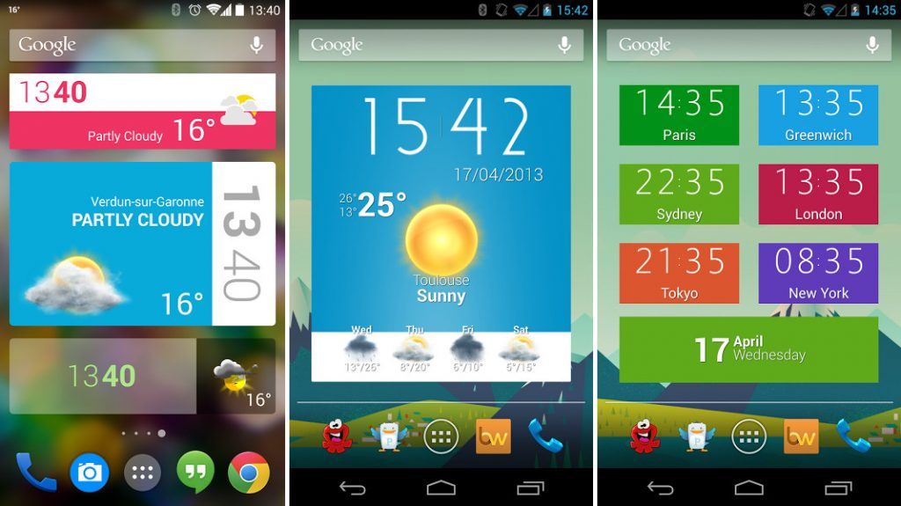
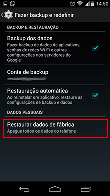

Celular Lento e Travando
Você comprou um celular novo mas após alguns meses de uso ele já não é o mesmo, já não abre os aplicativos ou acessa a Internet tão rapidamente, certo? Fique tranquilo, isso é mais que normal. Conforme você vai utilizando o aparelho no dia a dia, é comum ficar com o celular lento e travando Isso acontece principalmente devido à instalação e remoção de aplicativos, às imagens e vídeos que você já recebe ou baixa, enfim, você pode ficar com o celular lento simplesmente devido ao uso diário e a algumas configurações de personalização. A boa notícia é que existem algumas configurações simples, que podem ser feitas pelo próprio usuário para fazer a limpeza e manutenção do celular. Além disso, alguns aplicativos gratuitos irão te ajudar nessa tarefa. Nesse artigo vamos dar algumas dicas preciosas sobre como deixar o celular mais rápido. |
O que posso fazer?
Veremos abaixo alguns procedimentos simples que podem ser feitos por qualquer usuário e que sem dúvidas irá melhorar o desempenho do smartphone. Estamos usando como referências as configurações do Android, mas a maioria também serve para o IOS do Iphone, a lógica é a mesma.
Remova os aplicativos que não utiliza

| No decorrer do uso do aparelho, é comum instalarmos diversos apps por indicação de amigos, por uma necessidade de momento ou simplesmente por curiosidade, mas em pouco tempo nunca mais utilizar, nem mesmo lembrar que ele existe. Isso colabora muito em deixar o celular mais lento pois além do consumo de espaço de memória, esses aplicativos muitas vezes são executados e atualizados automaticamente, prejudicando o desempenho das funcionalidades que são realmente úteis. A dica é remover completamente esses aplicativos já que eles não são mais usados. Caso voltem a ser necessários, é só baixar novamente. Mantenha só os apps que utiliza com frequencia. Para isso, no Android, vá em “Configurações”, depois em “Gerenciador de Aplicações” ou “Aplicativos” (dependendo da versão). Agora é só selecionar os aplicativos que não usa e clicar em “Desinstalar”. |
Outra situação que pode deixar o celular lento e travando é o acúmulo de fotos, vídeos e músicas no celular. A lógica é, quanto mais informação o celular tem que lidar, mais lento ele fica, os recursos são limitados. É comum por exemplo tirarmos diversas fotos e selfies, e nunca mais olharmos pra elas. Uma dica é, uma vez por mês baixe para o seu computador as fotos que te interessa, e apage todo o resto, provavelmente mais de 90% vai para o lixo. Outra fonte interminável de arquivos inúteis é o WhatsApp. Principalmente se você participa de grupos, deve receber diversas fotos e vídeos que ou nunca nem viu, ou já viu uma vez e não precisa mais deles. Remova-os ou pela opção “Mídia do Grupo” dentro do aplicativo, ou diretamente na opção “Galeria” do Android. Ainda no WhatsApp, outra função interessante é desabilitar o download automático das fotos e vídeos. Para isso, dentro do aplicativo vá em “Configurações” > “Uso de Dados” e tire as opções de download automático do “Quando utilizar rede de dados” e “Quando conectado ao Wi-Fi”. Assim os arquivos só serão baixados quando você quiser |
Limpe os dados do cache
Durante a execução, muitos aplicativos criam arquivos temporários que ficam na memória do celular, visando melhorar o desempenho daquele aplicativo, isso tem o nome de “cache”. Na prática, após um tempo muitos desses arquivos tornam-se inúteis e só contribuem para deixar o celular mais lento. É importante limpar esse cache regularmente. Após isso, se for realmente necessário, o aplicativo irá criá-lo novamente na nova execução, sem nenhum problema para o usuário. Você pode remover o cache de cada aplicativo, individualmente, indo em “Configurações”, depois em “Gerenciador de Aplicações” ou “Aplicativos”, selecionando o app e utilizando a opção “Limpar Cache”. Ou você pode remover o cache de todos os aplicativos instalados de uma só vez. Para isso vá em “Configurações” > “Armazenamento”, selecione “Dados em Cache” ou “Dados Memorizados” (depende da versão) e clique “OK”. Não se preocupe, isso não irá apagar suas fotos, arquivos e nenhum aplicativo, somente os arquivos de cache.
Não deixe muitos aplicativos em execução
Muitas vezes não percebemos, mas conforme vamos abrindo os aplicativos no nosso smartphone, os apps que estavam sendo utilizados anteriormente não são fechados, eles continuam em execução, ocupando espaço em memória e você perceberá o celular travando. Regularmente feche esses aplicativos. Para isso você pode manter o botâo “Home” do Android pressionado, é o botão na parte inferior central, clicar em cada aplicativo e selecionar “Remover da Lista”, ou então clicar em “Fechar Todos”, a opção com um “x” que fica na parte inferior direita. Isso não vai remover o aplicativo, apenas tirar de execução.
Evite o uso dos Widgets e Papéis de Parede Animados na Tela Inicial
Estes pequenos aplicativos, apesar de alguns serem bem legais, também contribuem para deixar o celular mais lento. A menos que eles sejam realmente úteis, ou que você faça mesmo muita questão deles, evite usá-los. Além de deixar o aparelho um pouco mais rápido, vai economizar bateria.
Reiniciar o Celular
Sim, da mesma forma que se faz com um computador, é interessante reiniciar o celular de vez e quando. Esse procedimento simples vai limpar tudo que foi colocado e execução durante o uso mas que não tem mais utilizade.
Reset o Android
casos extremos, em que nada do que foi feito acima deu resultados, uma opção interessante é Resetar o Android para suas configurações de fábrica. Mas ATENÇÃO, o celular vai ficar como veio de fábrica, todos os aplicativos e atualizações serão perdidos, assim como seus arquivos, fotos, vídeos, contatos e etc. A menos que você tenha salvo em um chip de memória externo. Imagine que você esta comprando um celular novo. O bom do reset é que ele vai apagar tudo que não é essencial ao funcionamento do celular, e ele vai voltar a funcionar como novo. Se é o que deseja, acesse o menu “Configurações”, vá em “Contas” e selecione “Fazer o Backup e Redefinir”. Selecione então “Restaurar padrão de fábrica”. |

O Celular continua Lento e Travando
|